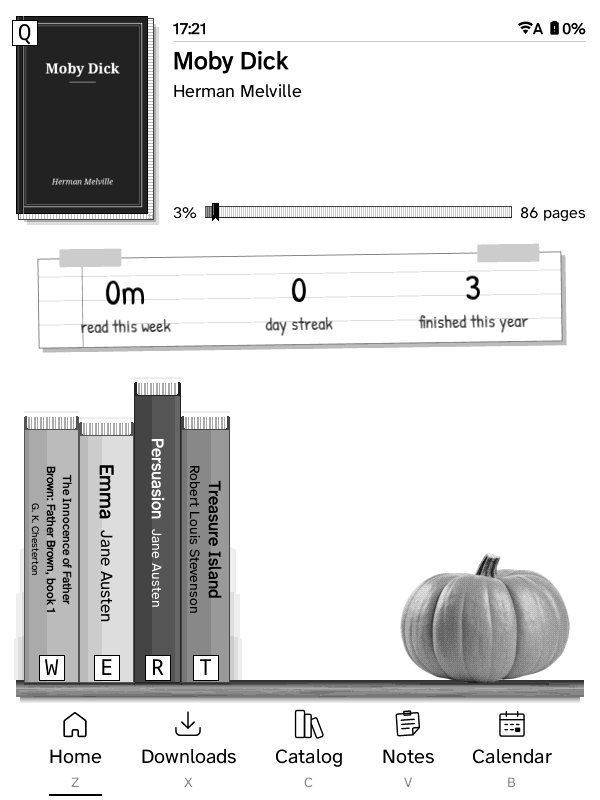
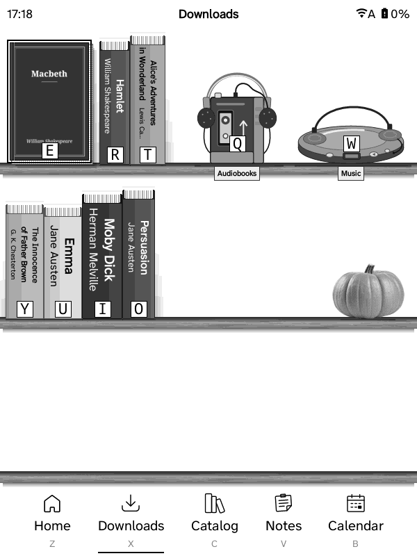
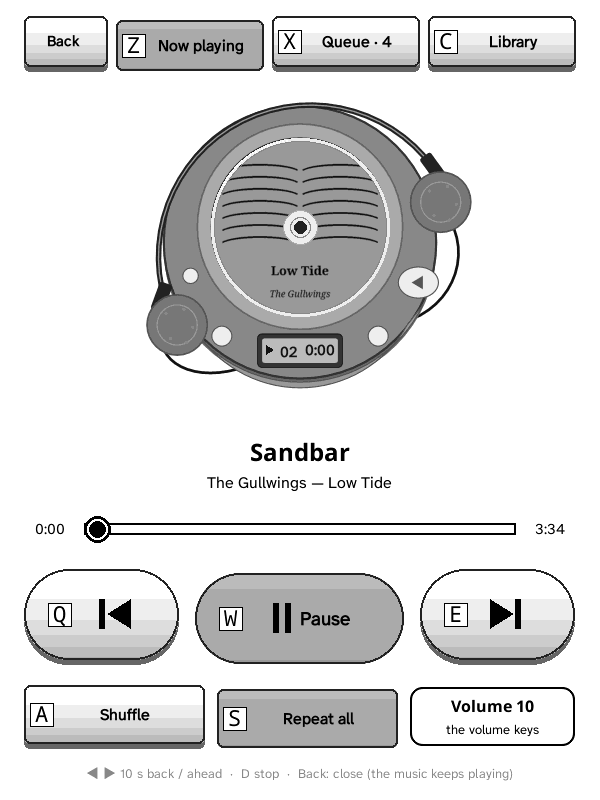
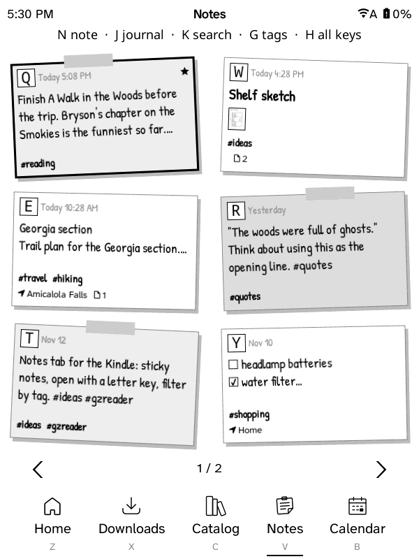
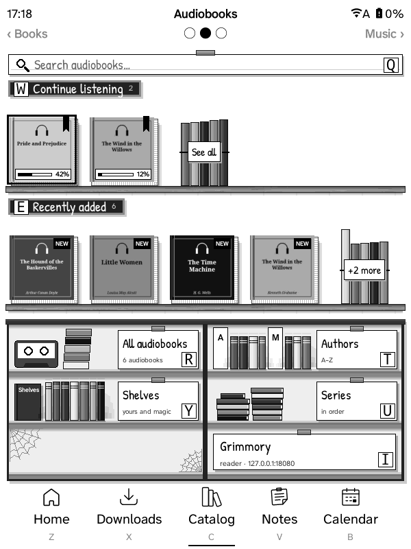
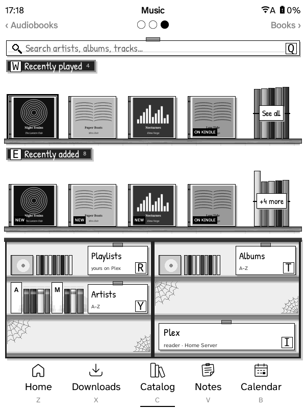

Your self-hosted library on a Kindle.
Books from Grimmory, notes from Memos, music from Plex, photos from Immich, your calendars and Home Assistant: the servers you run yourself, on Kindles from the Kindle 2 to the Scribe, on Kobos and on the first Nooks.
New: no Wi‑Fi? The Kindle 2 and DX sync through your computer →



Kindle · Kobo · Nook
Pick a model to see GZreader on its own screen, at its own size, and what it can do there. Taken in GZreader's emulator, which runs each device's real KOReader programs, with a demo library.
GZreader is KOReader trimmed down to reading, with the ZenOS interface and built-in connections to the servers a self-hoster already runs. It runs on e-readers from the Kindle 2 and Nook 1 to the Scribe: jailbroken Kindles, from the Kindle 2 and Kindle Keyboard to the Paperwhite and the Kindle Scribe with its pen, and, as test builds, Kobos (no jailbreak: NickelMenu or KFMon starts it) and rooted Nooks: the Nook 1st Edition and the Nook Simple Touch.
It began as a reader for a Grimmory library (the name is Grimmory + ZenOS + KOReader) and has grown past books. Each connection is optional: without any of them it's still a reader you can send books to from your browser.
Your books, notes and photos stay between the e-reader and your own servers. Diagnostic reports go to the developer only when you choose to send them.
The Catalog tab has three pages: swipe between them, or use the page-turn keys. Each is laid out like a shop, and anything you pick downloads in the background while you keep browsing or reading.
Your Grimmory library: Continue reading, Recently added, All books, libraries, shelves, authors, series and search.
Download or Download & open. Your place, bookmarks, highlights and ratings stay in sync.

Grimmory's audiobooks (or a Plex audiobook library): Continue listening, Recently added, authors, shelves and series.
Download & listen opens a cassette walkman. Your place is kept, and synced with Grimmory.

Your Plex music: Recently played, Recently added, playlists, albums and artists, as CD cases.
Download for offline, or Play and it starts as soon as the first track is in, in a portable CD player.
Audiobooks and Music are on Kindles with a speaker or headphone jack (Kindle 2, 3, DX, Touch) or with Bluetooth (Scribe, Paperwhite 5 and newer…); the others have the Books page.
KOReader's reader for EPUB, PDF, MOBI, CBZ and more. Your place, bookmarks, highlights, notes and ratings go both ways with Grimmory, and your books stand on shelves on the Kindle.
Scan a QR code or type the Kindle's address and a PIN. One page connects everything, single sign-on included, and sends books from your phone or computer straight to the Kindle.
Your Memos notes as sticky notes, written in a rich text editor like Memos' own: headings, bold, lists and checklists, formatted as you type.
CalDAV accounts and calendar links (Proton, Google, Outlook…) as an agenda, day, week or month.
A cassette walkman for audiobooks, with chapters and a sleep timer, and a CD player for Plex albums and playlists, played while you read. On Kindles with a speaker or headphone jack, or through Bluetooth headphones on the Scribe and newer Kindles.
Full drawing on touch and pen Kindles: a finger, or the Scribe's pen with pressure and an eraser button. Pens, pencil, highlighter, zoom, pages and notepaper. Drawings go to Memos as Memos' own, and ones made in Memos open on the Kindle.
Plants, a clock, a model ship, a pumpkin in season, or your own pictures stand where the shelves have room, on an oak, walnut or plain plank. Pick them on tiles with a preview of your shelf.
Your Home Assistant rooms on a tab: lights (and their dimmers), switches, thermostats, locks, garage doors and scenes, straight over your Wi‑Fi.
On the Kindle 2, 3, DX and Touch, and through Bluetooth on the Scribe and newer Kindles: books read in the Kindle's own voice, the sentence highlighted and pages turning by themselves.
Wi‑Fi only when needed, few screen flashes on older Kindles, a built-in English dictionary and updates from GitHub.
Kindle 2 · Kindle DX · no Wi‑Fi needed
The Kindle 2 and DX never had Wi‑Fi. GZreader keeps them in step anyway: plug the Kindle into your computer, open the sync page in Chrome or Edge and press Sync. Everything travels both ways.
Runs in your browser: it talks only to your own servers and writes to the Kindle. Sign-ins are kept on the Kindle, encrypted with its PIN, so any computer can sync it. Any Kindle can sync this way too. Try it with a pretend Kindle.
| Device | Package |
|---|---|
| Kindle 2, Kindle Keyboard (3), DX | gzreader-kindle-legacy |
| Kindle 4, Kindle Touch | gzreader-kindle |
| Firmware 5.16.3 or newer: Paperwhite 3 and later, Kindle Scribe, Kindle 2019–2024, Oasis, Colorsoft | gzreader-kindlehf |
| Paperwhite 2 and newer on firmware 5.16.2 or older | gzreader-kindlepw2 |
| Kobos (Touch to Clara Colour, Libra Colour, Sage, Elipsa) — test build | gzreader-kobo |
| Nook 1st Edition (2009, with the colour touchscreen) — test build | gzreader-nook-1st-edition |
| Nook Simple Touch, with or without GlowLight — test build | gzreader-nook |
Each package is for those devices only; the name links to its install steps. Which have been tested: device compatibility.